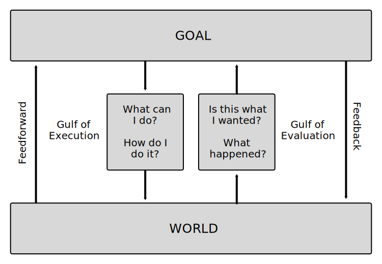
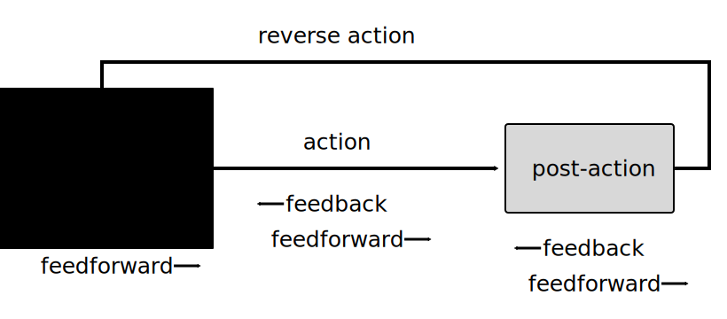
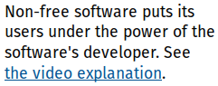
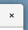
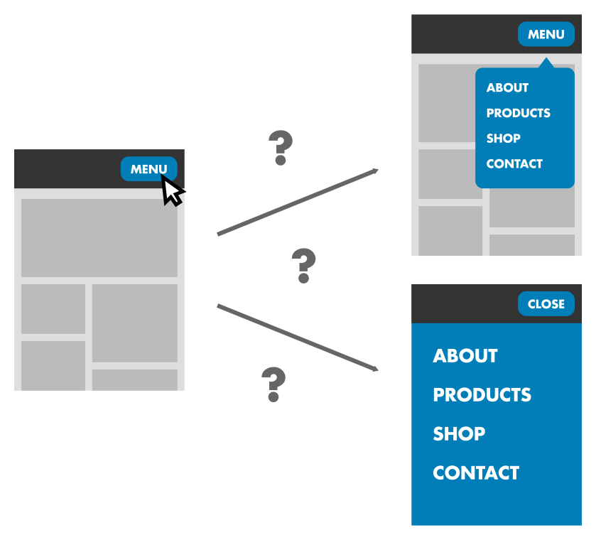

DRAFT
# A Framework for Analyzing Feedforward and Feedback in User Interfaces
## Abstract
Feedforward and feedback are important in helping users making sense of interactive systems. Comparing the ways in which different interaction patterns provide feedforward and feedback is complex, due to the many variables involved. This can make it difficult to choose the right interaction for a task.
To address this problem, we have developed a framework to categorize individual properties of interactions. This framework can be used to analyze and compare different interactions, enabling designers to choose the most appropriate one for a specific situation and find potential problems with their design. We have documented the framework with examples and applied it to real-world interactions to demonstrate how it can be used to analyze, compare, and improve interfaces.
## Introduction
Every interaction between a human and a machine is *designed* [[4]](#doet) - At some point during the process of building the machine, somebody has to decide which actions it can perform, how they are triggered, what information users get in return, what will happen as a result.
When making these decisions, there are many factors at play. How do users understand what they can do with the system? How do they know *how* to do it? What will happen when they do it? If they have made a mistake, how can they go back? [[4]](#doet)
All of these factors influence the usability of an interaction. Comparing interactions intuitively is therefore difficult, because it requires keeping track of them all simultaneously.
When designing physical objects, there are innate constraints. Considerations like weight, cost, or materials reduce the number of possible interactions a designer can employ.
With digital interfaces however, designers have almost unlimited freedom in this regard [[5]](#frog). They can make interfaces behave almost any way they want. Because of the inherent flexibility of the computer as a medium, an interaction in a digital interface can be designed in many different ways, which all provide the same functionality. Since there are so many different variables involved, it is hard to intuitively compare interactions, and thus to decide which is most appropriate.
## Theoretical background
In *The Design Of Every Day Things* [[4]](#doet) Norman describes the two gulfs that people face when operating a novel device. The gulf of execution, where they need to understand how to use it, and the gulf of evaluation, where they need to make sense of the device's response. Bridging these two gulfs requires *feedforward* and *feedback*.
Feedforward explains what will happen before the action is started, feedback explains what happened after the action.
<figure class="figure center wide">

<p>Norman's gulfs of execution and evaluation</p>
</figure>
Djajadiningrat et al. describe a pre-action/post-action model, in which feedforward is the information users get before performing an action, while feedback is the information they get after the action [[6]](#how).
<figure class="figure center">
<p>Djajadiningrat's pre/post-action model</p>
</figure>
These theories explain the general principle, but are not very useful for analyzing and comparing individual interactions. Many interactions provide feedforward and feedback not just before an after the action, but also while it is happening. In the larger context of an interaction, reversibility is also very important to make potential errors less costly [[4]](#doet). Since it provides information about how to undo an action, it can be considered feedforward which occurs after the action.
We extended Djajadiningrat's model with these notions to make it more useful for analyzing interactions.
In doing so, we found that there are different types of feedforward and feedback at different stages which need to be considered.
Before the action, feedforward tells the user which actions are available and what there effect will be. During the action, feedback tells them what the result of the action has been so far, and feedforward tells them which outcomes are possible if they continue. After the action, feedback tells the user what the final result of the action is, and feedforward tells them how to undo it.
When choosing or comparing interactions, all of these types of feedforward and feedback have to be considered.
<figure class="figure center wide">

<p>The pre/post-action model, extended with the notios of feedforward and feeback during various stages and reversibility</p>
</figure>
For example, changing the zoom level on a document might be done by choosing a numeric value, clicking + and - buttons, moving a slider, keyboard shortcuts, pinch-to-zoom, or any number of other interactions. All of these do essentially the same thing, but differ significantly in structure, complexity, and the ff feedback they provide.
If we had to decide between using buttons or pinch-to-zoom, how could we compare them?
<div class="adjacent-videos">
<video class="video example" src="assets/map-buttons.ogv" width="420" height="480" controls loop muted></video>
<video class="video example" src="assets/map-zoom.mp4" width="300" height="480" controls loop muted></video>
</div>
When comparing different interactions with similar effects like in this case, it can be difficult to stay on top of all the different variables at play.
For practitioners designing digital interfaces this difficulty has the effect that interactions are often chosen without considering all factors, and potential problems remain undiscovered.
In an attempt to solve this problem we have developed a categorization framework for feedforward and feedback throughout the different stages. Its goal is to help designers think more clearly about where and how feedforward and feedback are employed and provide an easily scannable overwiew of these properties. This enables fast high-level comparisons between interactions, as well as detailed analysis of individual aspects in isolation, and therefore makes it easier to decide which is better in a given scenario.
It also clearly highlights where interactions do not provide adequate feedforward and feedback, thus incentivizing desingers to either add them or motivate why they are not necessary.
Here is an example of applying the framework:
<iframe class="diagram-embed" src="zoom-buttons.html" width="800" height="440" style="margin-bottom: 0"></iframe>
<iframe class="diagram-embed" src="pinch-to-zoom.html" width="800" height="550" style="margin-top: 0"></iframe>
The diagrams make it easy to analyze and compare individual properties of the two interactions: The zoom buttons are highly discoverable and usable with little or no learning upfront. Pinch-to-zoom, on the other hand, is hard to discover if the user doesn't know about it, but it provides real-time feedback during the user interaction, whereas the zoom buttons require the user to click and then wait for the system to respond. Pinch-to-zoom also doesn't provide a preview, but since it does provide user-controlled feedback and inverse-action reversibility, this isn't as important, because the effects of the user's action are instantly visible to them and easily undone.
## Framework
<iframe class="diagram-embed w1050 mt0" src="diagram.html" width="1050" height="630"></iframe>
<div class="adjacent desktop-only">
<p>
This is the structure of the framework, with all the possible properties it can contain. Each box represents a property or category of properties of the interaction. The colored blocks represent different types of information which can be present or not (red box if it isn't present, one or more green boxes if it is). The transparent boxes structure similar types of feedback in larger categories.
</p>
<div class="diagram-container">
<div class="column">
</div>
<div class="block parent">
<h3>Group</h3>
<div class="block">
<h3>Optional property present</h3>
</div>
<div class="block no">
<h3>Optional property not present</h3>
</div>
</div>
</div>
</div>
When applying the framework to a specific action, the diagram is simplified, and only the applicable properties are kept. If an interaction provides a preview, for example, it will contain a green box in the *Pre-Action* column, otherwise a red one. In both cases, the description outlines the specifics of the property being present or not.
The framework is organized in three main categories, which correspond to the stages of the interaction timeline. *Pre-Action* describes what information about the effect of the action is available to the user before starting it. *Action* describes the information users are getting between the start and end of the interaction. *Post-Action* describes what information users have after the action is complete, both about what happened and about how they can go back.
### Pre-Action
<iframe class="diagram-embed mt0" src="compact-before.html" width="800" height="385"></iframe>
Djajadiningrat et al. stress the importance of providing the user with clear information on the consequences of an action before it is started [[5]](#how).
This helps them find the actions they are looking for in an interface, and saves them the surprise of actions that don't do what they thought they would. This can be achieved through feedforward. To disambiguate different types of feedforward within our framework, we refer to feedforward before the action as *preview*.
<div class="article-block parent">
A **Preview** gives the user information about what will happen, before the action itself starts. A preview can be symbolic (as in the case of the text on a navigation element) or literal (as in the case of an image thumbnail).
<div class="article-block">
A **Passive Preview** gives the user information about the outcome, without them having to interact with the system. Passive preview elements are either static, and therefore always available, or triggered in some indirect way by the user, for example by not doing anything for a few seconds.
<figure class="figure">
<p>The text on these buttons explains what will happen when they are clicked</p>
</figure>
<figure class="figure">

<p>The text label on the hyperlink tells the user where it will lead them</p>
</figure>
<figure class="figure">

<p>The ⨯ icon is widely used to mean "close" in software, so most users will understand it even though there is no explicit text label explaining it</p>
</figure>
</div>
<div class="article-block">
An **Active Preview** gives the user information about the outcome of the action when they interact with the system before starting the action itself. The interaction that triggers the preview must be different from the one that triggers the real action. For example, starting to scroll and then scrolling back immediately wouldn't qualify as a preview, because it is part of the action itself. This is why active previews are often triggered by secondary interactions, such as hover (with a mouse), or long tap (on touch screens).
<div class="figure-container">
<figure class="figure vertical">
<video class="example" height="340px" src="assets/twitter.ogv" controls loop muted></video>
<p>On Twitter, hovering over a user's name shows a hovercard with their bio</p>
</figure>
<figure class="figure vertical">
<video class="example" height="340px" src="assets/youtube.ogv" controls loop muted></video>
<p>When hovering over the timeline on a Youtube video, a thumbnail previews the video at a different timestamp</p>
</figure>
</div>
</div>
</div>
### Action
<iframe class="diagram-embed mt0" src="compact-during.html" width="800" height="385"></iframe>
Neither Norman nor Djadjadiningrat et al. explicitly talk about feedforward and feedback during the action itself. However, many actions can not be categorized in a simple pre/post-action model, because they consist of several smaller actions, each of which can provide feedforward and feedback. For example, when dragging and dropping a file from one folder to another, the user performs a series of actions (clicking the file, moving the cursor to a specific location, releasing the mouse-button), which, taken together, have the intended effect. Therefore, to analyze these types of actions, we need to consider feedforward and feedback not just before and after the action, but also while it is beeing performed.
If the action requires continuous input, then feedback helps the user understand what the current progress of the action is, informing how to proceed with the interaction. If the action has more than one possible outcome, than feedforward helps them evaluate and choose between possible outcomes. If the action happens autonomously, then feedback can help explain to the user what the system is doing between the initial and final state.
We have identified two main categories of feedback during actions: feedback that tells the user that their input was received (Input Feedback), and feedback that shows the user what has happened as a result of their input (Action Feedback).
<div class="article-block">
**Input Feedback** confirms the user's input, reassuring them that their action was recognized. It doesn't give any information about the status or progress of the action. In some cases, even though the user input was received properly, the action itself doesn't work. For example, clicking a file the user doesn't have permission to open will not open the file, even though this is the correct interaction for opening it.
<figure class="figure">
<video class="example" height="70px" src="assets/siri-transcript.mp4" autoplay loop muted></video>
<p>While talking to Siri, the command is transcribed on the screen in real time, showing the user that they are being heard</p>
</figure>
<figure class="figure">
<video class="example" src="assets/material-button.ogv" autoplay loop muted></video>
<p>The radial reaction on the button confirms that the click was recognized</p>
</figure>
</div>
<div class="article-block parent">
**Action Feedback** informs the user about the current progress of the action or previews its outcome while the action is ongoing. This progress can either be autonomous, or controlled by continuous user input. Both of these can be used in combination in a single interaction, such as in the case of kinetic scrolling and other physics-based effects.
<div class="article-block parent">
With **User-Controlled** feedback, the progress of the action is driven by continuous user input.
<div class="article-block">
**Direct Manipulation** are actions where the user interacts directly with the element that is being manipulated.
<div class="figure-container">
<figure class="figure vertical">
<video class="example" height="290px" src="assets/inkscape-dm.ogv" controls loop muted></video>
<p>In many graphics applications position, scale, and rotation can all be adjusted by directly manipulating elements</p>
</figure>
<figure class="figure vertical">
<video class="example" height="290px" src="assets/dnd-undo.ogv" controls loop muted></video>
<p>Dragging a file from one file browser window to the other moves it to the folder that is open in the other window</p>
</figure>
</div>
</div>
<div class="article-block">
**Indirect Manipulation** are actions where interaction and effect happen on different objects.
<div class="figure-container">
<figure class="figure vertical">
<video class="example" height="200px" src="assets/font-slider.ogv" controls loop muted></video>
<p>The slider manipulates the size of the type specimen in real time</p>
</figure>
<figure class="figure vertical">
<video class="example" height="200px" src="assets/blur-slider.ogv" controls loop muted></video>
<p>The slider manipulates the blur value for the selected rectangle in real time</p>
</figure>
</div>
</div>
</div>
<div class="article-block">
**Autonomous** feedback is triggered by the user indirectly, and they have no control over its progress. It can be triggered by the start of the interaction, or, in case of a user-controlled interaction, in response to the course the action is taking. The difference to user-controlled feedback is that once it has started it will run its course, and the user cannot influence the direction it is taking until it is finished.
<div class="">
<figure class="figure vertical">
<video class="example" height="210px" src="assets/scroll-animation.ogv" controls loop muted></video>
<p>When clicking on the scrollbar, the page autonomously scrolls to the new position with an animation</p>
</figure>
<figure class="figure vertical">
<video class="example" width="490px" src="assets/reload-progressbar.ogv" controls loop muted></video>
<p>The progress bar gives a sense of what the loading status of the page is</p>
</figure>
</div>
</div>
</div>
<div class="article-block no">
If there is no **No Action Feedback**, that means the user gets no information about the course of the action between the start and end of the action.
<figure class="figure">
<video class="example" height="220px" src="assets/hyperlink-back.ogv" controls loop muted></video>
</figure>
</div>
<div class="article-block">
If an action requires continuous input ore has multiple possibles outputs, **Action Feedforward** gives the user information on how to proceed with the action
<div class="figure-container">
<figure class="figure vertical">
<video class="example" height="400px" src="assets/android-dnd.mp4" controls loop muted></video>
<p>Dragging an ap icon reveals two labels with representing possible actions at the top of the screen, dropping it on these labels executes the respective action</p>
</figure>
<figure class="figure vertical">
<video class="example" height="350px" src="assets/autocomplete.ogv" controls loop muted></video>
<p>After typing the first few characters of a CSS property, the editor starts suggesting possible properties</p>
</figure>
</div>
</div>
### Post-Action
<iframe class="diagram-embed mt0" src="compact-after.html" width="800" height="385"></iframe>
Giving the user feedback after an action is a well-recognized tenet of good design [[4]](#doet). It helps users make sense of what the effect of there action was and evaluate whether it is what they wanted. In our framework we refer to this type of feedback as *result* in order to distinguish it from action feedback, which occurs during the action.
In *The Design of Every Day Things* [[4]](#doet) Norman argues for making actions easily reversible in order to minimize the impact of human mistakes. In our opinion, reversibility should be considered part of an action because it affects the impact of feedforward in previous stages. If the potential cost of getting the action wrong is low, feedforward before the action is less important. For example, an action which is easily reversible, like scrolling a page, doesn't need a preview as much as an action which is hard or impossible to undo, like deleting a file.
Telling the user how to undo the action can be seen as a type of feedforward with respect to a second action which reverses the effects of the previous one. To distinguish this concept from *preview* and *action feedforward*, we refer to feedforward after the action as *reversibility*.
We have identified two types of reversibility: *inverse-action* reversibillity, which refers to actions which can be undone by performing the opposite action, and *unrelated-action* reversibility, which includes all other types of easily reversible actions.
<div class="article-block">
The **Result** of an action is the effect of the action that is visible to the user. This is often synonymous with the action's actual purpose (for example if the action is a type of navigation), but there are also cases where they are quite different, because the response is just a symbolic representation of the real (non-visual) action being performed.
<ul>
Examples:
<li>An application is open after clicking its icon</li>
<li>The device is locked after pressing the power button</li>
<li>A document is printed after giving the command to do so</li>
</div>
<div class="article-block no">
**No Result:** Since most actions have some kind of result, the concept is most easily illustrated with a counterexample: The keyboard command to copy selected text (`ctrl+c`). If there is an active text selection, this shortcut copies the selected text into the clipboard. After the action, there is no visible reaction from the system whatsoever. The only way to know if the clipboard content changed is to paste it somewhere else.
<figure class="figure">
<video class="example" height="240px" src="assets/copy.ogv" controls loop muted></video>
</figure>
</div>
<div class="article-block parent">
**Reversibility** describes how an action can be undone, and how this is presented to the user. In the context of this framework, we define it as allowing the user to reverse the effects of the action easliy, i.e. with little cognitive and physical effort.
<div class="article-block">
**Inverse Action** reversibility is when the opposite action produces the opposite effect, making it easy to reverse an action without having to learn a new interaction.
<div class="figure-container">
<figure class="figure vertical">
<video class="example" height="430px" src="assets/medium-sidebar.mp4" controls loop muted></video>
<p>The sidebar in many Android apps can be opened by sliding it in from the left and closed by sliding it back out</p>
</figure>
<figure class="figure vertical">
<video class="example" height="430px" src="assets/dnd-undo.ogv" controls loop muted></video>
<p>Dragging and dropping files to the wrong folder is easily reversible by dragging them back to the original folder</p>
</figure>
</div>
</div>
<div class="article-block">
**Unrelated Action** reversibility is when there is a quick, convenient way to undo the action, but it is not the opposite of the action itself. This means that some additional learning is required, and the process is less direct and intuitive.
<div class="figure-container">
<figure class="figure vertical">
<video class="example" height="180px" src="assets/back.ogv" controls loop muted></video>
<p>After opening a folder, the back button will navigate back to the previous location</p>
</figure>
<figure class="figure vertical">
<video class="example" height="180px" src="assets/delete-undo.ogv" controls loop muted></video>
<p>After deleting files a banner with an undo button appears, making it easy to restore accidentally deleted files</p>
</figure>
</div>
</div>
</div>
<div class="article-block no" style="padding-bottom: 0.7em">
**Not Reversible** actions include both ones that are impossible to undo (e.g. sending an email), and actions that are theoretically reversible, but require a lot of effort or learning to do so (e.g. recovering a file after it was deleted). This is because if reversing the action is as complex as the action itself (or more so), it stops being part of that action and becomes its own action.
</div>
## Examples
The framework is applicable to a wide range of interactions, inside and outside the typical realm of screen-based graphical user interfaces. The following examples show the breadth of possible applications.
This example provides information at almost every level: The interface explains what to do and how to do it, gives instant, user-controlled feeback during the interaction, and is easily reversible with the inverse action.
<iframe class="diagram-embed" src="slide-to-unlock.html" width="800" height="525"></iframe>
Scrolling on a touchscreen is one of the simplest examples of direct manipulation, and it shows how straightforward inverse action reversibility can be. There is no preview, but in general, direct manipulation requires less external feedback before the action, since it is built into the manipulation itself. For example, an intrinsically reversible action like scrolling doesn't need a preview as much as e.g. a hyperlink, because scrolling a little and then going back can serve as a kind of active preview.
<iframe class="diagram-embed" src="scrolling.html" width="800" height="635"></iframe>
On the other side of the spectrum there are interactions wich provide very little information. This is very common in keyboard and voice interactions, because these ways of interacting don't allow for things like user-controlled feedback or inverse action reversibility. In this example, input feedback helps reduce uncertainty about whether the computer even understands the spoken command.
<iframe class="diagram-embed" src="siri.html" width="800" height="510"></iframe>
As this example shows, a detailed preview can alleviate the lack of action feedback to some extent. The thumbnail displayed on hover gives the user an idea of what part of the video they'll be skipping to, instead of leaving them in the dark until they've actually clicked (which is what most video players do).
If an interactions can't provide user-controlled action feedback (e.g. mouse clicks or keyboard commands), previews can help the user decide whether this is the action they want to trigger.
<iframe class="diagram-embed" src="youtube-seek.html" width="800" height="410"></iframe>
There are also actions with multiple distinct phases, which provide different types of feedback and feedforward during the different phases. In this example there is an initial "trigger" phase during which the user swipes the list element horizontally. When they release the element, a second "action" phase is initiated. Depending on how far the element was moved, it either snaps back into position or slides out of view, and its slot in the list is closed. This means that even though part of the action provides user-controlled feedback, there is no inverse-action reversibility, since the element is no longer visible. Instead, the app shows a banner with an undo button after the action is complete.
<iframe class="diagram-embed w870" src="swipe-to-clear.html" width="870" height="530"></iframe>
## Application
To demonstrate the framework's usefulness in practice, I have used it to analyze a few real-world interaction patterns, highlighting where they succeed, where they fall short, and what could be improved.
### Clicking for Navigation
Links, tabs, menus, and other navigation elements that are clicked or tapped all suffer from the same problem: It is [hard to know](http://www.jonikorpi.com/zoomable-ui-for-the-web) what exactly will happen when you click them, even if they are clearly labelled. This is because the click is an inherently ambiguous interaction. It doesn't have a direction, duration, or other variables that conveys meaning beyond the coordinates of the click.
<figure class="figure center">

<p>Will clicking this menu button open a small popover menu or a huge fullscreen menu (or something entirely different)?</p>
</figure>
Due to the simplicity and ubiquity of this interaction it is impossible to infer meaning from it and thus to predict what kind of behavior it will trigger. Unlike the right-click, which almost always opens contextual menus, the left click (or tap on mobile) can do anything, from opening applications to turning off the device. This means that unless the clicked element explains what will happen in detail, the user is left with a lot of uncertainty.
This problem gets worse when the action does not provide sufficient feedback while it is happening. Then the user not only does not know what will happen, but they don't even see it happening, which means that they have to compare the new state to their memory of the previous one and find the difference. To make matters worse, inverse action reversibility is impossible (there is no opposite to a click), which means that going back if the result isn't what the user wanted always requires some effort.
The hyperlink is a typical example for an interaction that involves clicking which has all of the problems described above.
<iframe class="diagram-embed" src="hyperlink.html" width="800" height="410"></iframe>
This example provides a preview, but it is not very detailed. Since the action has no built-in reversibility and preview through something like direct manipulation, providing a comprehensive preview can help users decide whether they want to start the action or not. In this case, a way to improve the preview could be to add an active preview, e.g. displaying additional information about the navigation target in a small overlay (hovercard).
<figure class="figure center">
<video class="video example" src="assets/twitter.ogv" style="width: 100%; height: 325px;" controls loop muted></video>
<p>A hovercard on Twitter previewing a user profile</p>
</figure>
Input feedback is provided by the web browser natively in this case. The link color changes to red while it is being clicked.
There is no action feedback during the action, it instantly switches from start to end state. Adding autonomous feedback (e.g. an animated transition) would be definitely possible in this case, though a native implementation of this on the web is still [work in progress](http://chrislord.net/index.php/2015/04/24/web-navigation-transitions).
<figure class="figure center" style="width: 520px">
<video class="video example" src="assets/link-animation.ogv" style="width: 100%; height: 325px;" controls loop muted></video>
<p>An example of a semantic animation explaining the state change and relationship between states</p>
</figure>
As for reversibility, the browser's back button provides unrelated-action reversibility, which, though not as intuitive as inverse-action reversibility is at least a consistent interaction which works on all websites. This makes up for some of the non-intuitiveness of having to perform an action completely different from the previous one in order to undo its effects.
### CTRL+C Copying
Like most keyboard commands, this example provides no information before or during the action. However, it is particular in that it doesn't even have visible effects, and reversibility is completely impossible, because the previous clipboard content is overwritten with no way to get it back.
<iframe class="diagram-embed w870" src="ctrl+c.html" width="880" height="445"></iframe>
Since it is a keyboard command, it is forgivable that there is no preview, as that would require graphical elements on the screen. Keyboard shortcuts are an optional feature for power users, and as such it is acceptable that they require some learning. A good system for discovering and looking up shortcuts (e.g. [GNOME's shortcut window](https://blogs.gnome.org/aday/2015/12/14/shortcuts-love)) at the OS- or application level is of course important, but that is a much broader issue.
However providing feedback during the interaction would be possible in this context. Providing input feedback could be as simple as adding a sound, or a light visual cue, such as a brief change in background color on the copied text. Action feedback would be more complicated, because it would require a visual representation of the clipboard somewhere in the system, e.g. a built-in [clipboard manager](http://www.makeuseof.com/tag/6-tools-manage-linux-clipboard).
<figure class="figure center" style="width: 400px">
<img class="example original" src="assets/clipboard-indicator.png">
<p>The [*Clipboard Indicator* GNOME Shell extension](https://extensions.gnome.org/extension/779/clipboard-indicator) keeps a history of recent clipboard entries, thus making it possible to go back to previously copied snippets</p>
</figure>
With a visual representation of the clipboard at the operating system level, it would be possible move the copied text from its origin to the clipboard with an animation. This would explain the process at a glance. It could even enable copying by direct manipulation, i.e. by dragging the selected text to the clipboard area.
<figure class="figure center" style="width: 448px">
<video class="video example" src="assets/copy-animation.ogv" style="width: 100%; height: 240px;" controls loop muted></video>
<p>Tentative redesign with autonomous action feedback. The animation conveys that the text is being copied and shows where it is going.</p>
</figure>
Similarly, a visual clipboard would make the effect of the action explicit, as the copied text would be visible without having to be pasted. Though this idea would not make reversibility very easy, it would at least mean that it's impossible to lose data when accidentally overwiting the content of the clipboard.
## Discussion & Conclusion
Using Norman's action stages and Djajadiningrat et al.'s pre/post-action model as a starting point we have developed a framework for analizing and comparing feedforward and feedback in individual interactions.
It is intended to be a tool for practicioners designing user interfaces.
We have applied it to a number of real-world interactions, and shown how it can be used to gain a more holistic view of feedforward and feedback at different stages of an interaction.
Though the framework is quite general and applicable to a wide range of interactions, we believe that parts of it could be explored further.
One such area is the power and complexity of different actions. Considering the differences in the possibile number of inputs and outputs between different actions (for example, pressing a button has one possible outcome, moving a slider can have thousands), it may be useful to have a system for distinguishing between different classes of complexity.
Another idea we have not explored in detail yet is the cognitive and physical effort that different actions require. Some types of actions, especially direct manipulation, provide a lot of feedback, which makes them easy to grasp, but also require very precise input, which can make them inefficient in the long run. Once the user is intimately familiar with an action, direct manipulation is often no longer the best way to perform it, because they have learned a more convenient shortcut. For example, dragging an element into the trash can to delete it requires more effort than clicking a "delete" icon, and a lot more effort than pressing the "delete" key on the keyboard.
The availability of certain input methods (e.g. mouse, touchscreen, physical keyboard) is probably a factor in determining how much effort something requires.
Identifying different types of effort and finding ways to categorize and quantify them could provide a more complete picture of interactions.
Another aspect which the framework in its current form does not address is signifiers. This concept was first introduced in Norman's *Signifiers not affordances* [[3]](#snota) in 2008. It refers to information which helps people perceive affordences, i.e. shows them how to perform an action. The term affordance, coined by Gibson[[7]](#taff) and introduced to HCI by Norman[[1]](#poet), refers to properties of a relationship which make actions possible, for example a rope affords being pulled by a human. Affordences exist whether they are perceivable or not, so for designers, what really matters are perceived affordances. Signifiers are what makes them perceivable.
In our framework, signifiers play a role in all three of the action stages, but due to their subjective and contextual nature they are hard to assess outside of a specific context. For example, a user who has never used a touchscreen device is unlikely to understand that a map application affords pinch-to-zoom, whereas for an experienced smartphone user, the map itself is a signifier for this.
In order to compare signifiers, one has to make assumptions about the context, which is why we felt it problematic to include in the framework.
## References
1. Norman, D. A. (1988). *The psychology of everyday things*. Basic books. <a name="poet"></a>
2. Norman, D. A. (1999). *Affordance, conventions, and design*. interactions 6, 3
38–43. <a name="afcode"></a>
3. Norman, D. A. (Nov. 2008). *The way I see it: Signifiers, not affordances*.
interactions 15, 6, 18–19.<a name="snota"></a>
4. Norman, D. A. (2013). *The design of everyday things: Revised and expanded edition*. Basic books <a name="doet"></a>
5. Wensveen, S. A. G., Djajadiningrat, J. P., and Overbeeke, C. J. (2004).
*Interaction frogger: a design framework to couple action and function
through feedback and feedforward*. In Proc. of Designing Interactive
Systems, DIS ’04, ACM (Cambridge, MA, USA). <a name="frog"></a>
6. Djajadiningrat, T., Overbeeke, K., and Wensveen, S. (2002). *But how, Donald,
tell us how? On the creation of meaning in interaction design through
feedforward and inherent feedback*. In Proc. of Designing Interactive
Systems, DIS ’02, ACM (London, England, ), 285–291. <a name="how"></a>
7. Gibson, J. J. (1977). *The theory of affordances. Perceiving, acting and knowing: toward an ecological psychology* 6782. <a name="taff"></a>